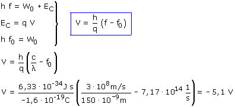

b)
Los fotones de la radiación arrancan electrones del metal y les dan energía cinética:

La energía cinética de los electrones se puede determinar a partir del potencial de frenado:

En el caso crítico (Umbral) los fotones sólo tienen energía para extraer los electrones del metal sin darles energía cinética:

Combinando estas tres expresiones se obtiene un sistema con tres incógnitas: W0, EC, (VB - VA)

El potencial de frenado suele darse sin signo, por tanto valdrá: 5.1 V